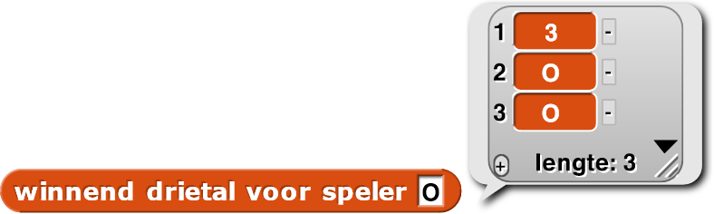
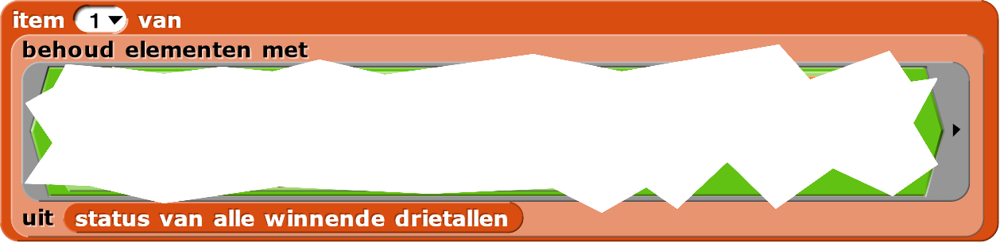
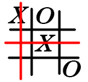
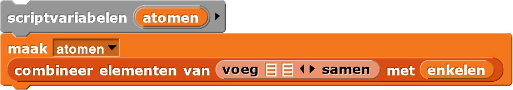

De computer strategisch laten spelen
Op deze pagina, ga je regels van de vorige pagina implementeren zodat de computer strategisch kan spelen.
Je gaat een -blok maken zodat je naar alle klonen een signaal kan uitzenden met de positie waar de computer zijn zet wil doen. Alleen de kloon met het bijbehorende positienummer zal veranderen naar een O, net als voorheen.
De code voor volgende zet van computer zal de drie strategieregels implementeren:
- Regel 1: Als ik (de computer, O) kan winnen, doe dat.
- Regel 2: Als mijn tegenstander (de persoon, X) kan winnen, blokkeer de winnende zet.
- Laatste regel: Anders vullen we het beste lege vierkant.
volgende zet van computer-blok bouwen met behulp van twee nieuwe blokken: kan
nu winnen? en winnend vierkant, die nog niet bestaan. Om volgende zet van
computer te bouwen moet je eerst de twee andere blokken maken, maar je hoeft ze nog niks te laten
We zullen ze alleen gebruiken om volgende zet van computer op te zetten en je gaat
ze pas later echt implementeren.
- Open je H5-BoterKaasEnEieren-project als je dat nog niet gedaan had.
-
Maak deze twee nieuwe blokken aan om de strategie te implementeren. Zorg er eerst voor dat
kan speler ... nu winnen?altijdniet waarrapporteert. Zet nog geen code inwinnend vierkant voor speler ....
Waarom moetkan speler ... nu winnen?altijdniet waarrapporteren? Op die manier slaat de computer regels 1 en 2 over en gaat ie automatisch naar de laatste regel. Op die manier kan je je programma blijven gebruiken terwijl je deze twee nieuwe blokken test. - Maak nu het -blok
dat de strategie uitvoert met behulp van deze twee nieuwe blokken. Gebruik deze strategie als invoer
voor
zend signaalin plaats vanbeste lege vierkant - Speel een potje tegen de computer en zorg ervoor dat je project nog steeds werkt.
Je kan status van alle winnende drietallen gebruiken om te controleren voor een drietal waarmee
de computer de
volgende beurt kan winnen, maar je weet nog niet welk vierkant de computer gaat bezetten. Om dat mogelijk te
maken moet je de vierkanten in bord initialisern met de getallen 1 tot en met 9 in plaats van
negen keer het woord "Leeg". Dan kan de positie van het winnende drietal vinden.
-
Verander de initialisatie van bord zodat het nu een lijst van getallen van 1 tot en met 9
is.
Je kan handmatig de getallen typen of gebruikmaken van
 .
.
- Debuggen. Speel een potje. Zoek stukken van de code die nog probleme veroorzaken en zoek er oplossingen voor.
Nu ga je werken aan de
-
en blokken.
Het kan ... nu winnen?blok kan gewoon kijken of er een winnend vierkant is door naar het
resultaat van winnend vierkant te kijken, dus je moet eerst winnend vierkant
bouwen.
Je begint door eerst een blok te bouwen om de drie vierkanten te vinden waarmee de speler de volgende
beurt zou kunnen
winnen. Daarna zal winnend vierkant het vierkant selecteren dat nog ingevuld moet worden uit
het drietal.

-
 Hoe zou je een of meer blokken die je hebt gemaakt kunnen gebruiken om erachter te komen of een
speler de volgende beurt kan winnen?
Hoe zou je een of meer blokken die je hebt gemaakt kunnen gebruiken om erachter te komen of een
speler de volgende beurt kan winnen?


 Je hoeft het nog niet te bouwen. Bespreek alleen wat je zou kunnen doen.
Je hoeft het nog niet te bouwen. Bespreek alleen wat je zou kunnen doen. -
Maak een blok. Het moet het
eerste drietal rapporteren dat het vindt dat een vierkant bevat waarmee de speler kan winnen.
Het is misschien handig om deze blokken te maken:
Klik hier voor een hint over
winnend drietal.Je hebt geleerd over
behoudmet predikaten in Hoofdstuk 2 Les 3 Pagina 2:Houditems van lijsten.Klik hier voor nog een hint over
winnend drietal.De speler zelf moet twee keer in het drietal staan en de tegenstander mag er niet in voorkomen. - Speel weer een potje voor een stukje test daarna
winnend drietalvoor alle mogelijke invoeren (X en O). Speel verder en test ze opnieuw. Fix bugs als je ze tegenkomt. - Wat rapporteert
winnend drietalals er geen winnend drietal is? - Bouw nu de code voor het blok. Zorg dat het ook werkt als er geen winnend drietal is.
- Speel een potje voor een stukje, test
winnend drietalvoor beide spelers en fix bugs als die er zijn. - Implementeer met behulp van je
winnend drietalblok. - Speel een aantal potjes tegen het programma. Fix alle bugs die je tegenkomt. Controleer of de computer alle drie de regels van de strategie gebruikt.
- Pas het programma aan zodat de computer zowel als X als O kan spelen. Als het spel begint moet je de menselijke speler vragen of hij X of O wil zijn.
- Verzin een manier zodat je kan kiezen of je tegen een ander persoon of tegen de computer wil spelen.
- Speel tegen de computer en zoek een strategie waarmee je zelf altijd van de computer wint. (Dit is zo makkelijk als je misschien denkt; de strategie van de computer is best goed.)
- Maak nog meer regels om de computer een beter speler te maken. Hiervoor moet hij meerdere beurten
vooruit kijken. Hier zijn meerdere manieren voor, hieronder staat een manier uitgelegd.
-
Je bent nog niet verzekerd van de overwinnign als je een winnende zet voor jezelf kan vinden
2 beurten van te voren. Als jij hem kan zien, dan kan je tegenstander dat ook en die gaat je
blokkeren. Je moet eigenlijk op zoek naar een tweesprong:: twee drietallen die een
vrij vakje delenen waar
jij één keer in voorkomt en je tegenstander niet. Zo'n tweesprong kan je zien in de
afbeelding hieronder:

Speler X begon het potje met een standaard openingszet: in het midden. Speler O reageerde met een matige zet, op de bovenste rij, en staat daardoor op het punt te verliezen. Speler X deed daarna een zet in de linkerbovenhoek. Speler O deed daarop een zet in de rechteronderhoek. zodat X niet meteen zou winnen. Het is nu X' beurt. Er is geen drietal met twee X'en of twee O's. Speler X kan wel twee drietallen vinden waarmee nog te winnen valt, deze zijn gemarkeerd door de rode lijn in de afbeelding hierboven. Beide drietallen hebben één X en twee lege vierkanten, daarnaast overlappen de drietallen bij een leeg vierkant. Het overlappende vierkant is nummer 4, het linker vierkant in de middelste rij, dit is dus waar Speler X zijn volgende zet moet doen. - Vind alle drietallen (rapporteer dus een lijst van drietallen) waarbij de computer één vierkant heeft en de andere twee leeg zijn, sla deze op in een variabele genaamd enkelen.
-
Maak een grote lijst van alle letters en getallen van de drietallen:

- Zoek nu naar een getal dat meerder ekeren voorkomt in
atomen.
"Atoom" is een technische term voor een waarde die geen lijst is. Een lijst bevat een aantal elementen, net zoals dat een molecuul een aantal atomen bevat.Je hebt al eendubbelen-blok geschreven in Hoofdstuk 5 Les 1 Pagina 3: Algoritmes om lijsten te verwerken. -
Je bent nog niet verzekerd van de overwinnign als je een winnende zet voor jezelf kan vinden
2 beurten van te voren. Als jij hem kan zien, dan kan je tegenstander dat ook en die gaat je
blokkeren. Je moet eigenlijk op zoek naar een tweesprong:: twee drietallen die een
vrij vakje delenen waar
jij één keer in voorkomt en je tegenstander niet. Zo'n tweesprong kan je zien in de
afbeelding hieronder: